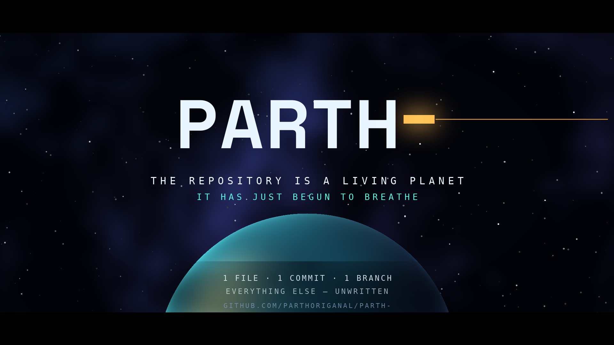

A world before its first sunrise. An original motion-graphics film built only from the verified, real DNA of github.com/parthoriganal/Parth- — one file, one line, one commit. Nothing invented; everything else, unwritten.
Master render (out/parth-living-planet.mp4). Use the chapter buttons to jump between acts.
The same timeline, palette and on-screen facts, running in real time on Canvas 2D
(src/film.js). Art-direct here, then re-render the master with the Python pipeline —
see README.md. It loops; scrub to any second.
The hero frame: the trailing hyphen of Parth- extends into an open horizon above the proto-planet.

Read live from GitHub (gh repo view + API) and local git on 2026-10-30. If the repo grows,
regenerate the film — don't edit these numbers by hand in the video.
| FACT | VERIFIED VALUE | HOW IT APPEARS IN THE FILM |
|---|---|---|
| repository | parthoriganal/Parth- (public, created 2026-10-30 08:31 UTC) | Final title + URL credits |
| files | README.md only — 1 file, 1 line, 8 bytes: # Parth- | Act III monolith, word for word |
| commits | 1 — 5a41087 “Initial commit” | Act II meteor; Act IV orbiting moon; render seed |
| branches | default branch main | The one solid orbit ring; dashed rings are labelled “future” |
| languages | none detected ({} from the API) | Three dormant rivers labelled “not yet chosen” — no fake percentages |
| releases · stars · forks | 0 · 0 · 0 | Act IV line: “No releases. No stars yet. Only gravity.” |
| topics / description | none set | Never claimed on screen; the film's theme is the blank canvas itself |
One breathing point of light. “Every world begins with a single line.”
Commit 5a41087 falls as a meteor. Its shockwave settles into the orbit of main.
README.md rises as a glass cathedral of one line. Rivers of language wait, unchosen.
Dust gains gravity. The first commit becomes a moon. “Only gravity.”
The unfinished name resolves; its hyphen stretches into an open horizon.
Type: Space Grotesk (display) + DejaVu Sans Mono (data). Hero motif: the trailing hyphen — cursor, horizon, orbit-line.